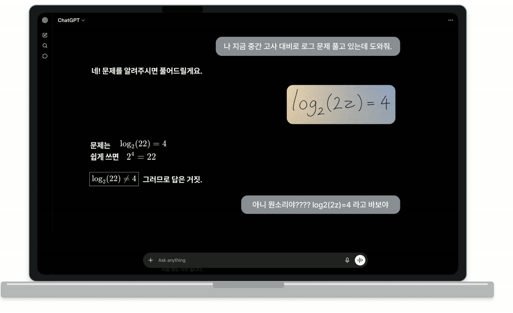

01 — WHAT WAS TAKEN
빼앗긴 시간과 끈기와 기쁨을,
한 사람씩 돌려드리겠습니다.
① 빼앗긴 시간

그리고 "그러므로 답은 거짓"이라고 단정합니다. 아니라고 다시 설명해야 하는 건 학생 쪽입니다.
빼앗긴 것
사진을 다시 찍고, 잘못 읽은 걸 바로잡고, 처음부터 다시 설명합니다. 문제를 푸는 시간보다 도구를 설득하는 시간이 깁니다.
② 빼앗긴 끈기
끈기는 어려움을 통과해 본 만큼 자랍니다. 그래서 이것이 핵심입니다 — 어떤 어려움은 제거해야 하고, 어떤 어려움은 끝까지 통과해야 합니다.
한 어머니에게 두 아들이 있습니다
누가 더 수학을 잘하는 학생일까요?


밤새 연필로 빼곡하게 풉니다.
문제집엔 X와 세모가 가득합니다.
VS


“모르는 건 AI한테 물어봐야지.”
문제집은 전부 동그라미입니다.
채점만 보면 답은 분명합니다. 그러나 그 동그라미를 그린 것은 수민이가 아니라 AI였습니다. 준서의 세모 옆에는 지우고 다시 쓴 자국이 남았습니다. 끈기는 그 자국 위에 쌓입니다. 그리고 시험장에는, 둘 다 혼자 앉습니다.
③ 빼앗긴 기쁨

이 표정은 답을 받아 적어서는 나오지 않습니다.
우리가 지키는 선
답을 받아 적는 동안, 스스로 풀어냈을 때의 성취와 기쁨이 사라졌습니다. 맞았는데도 왜 맞았는지 말할 수 없습니다.
마지막 한 걸음은 학생이 밟습니다. 대신 밟아주지 않습니다. 풀어낸 사람이 학생이어야 그 순간이 학생의 것이 됩니다.